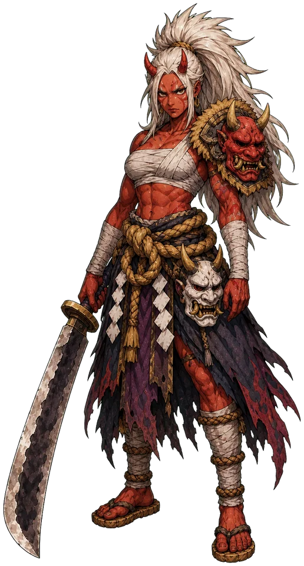
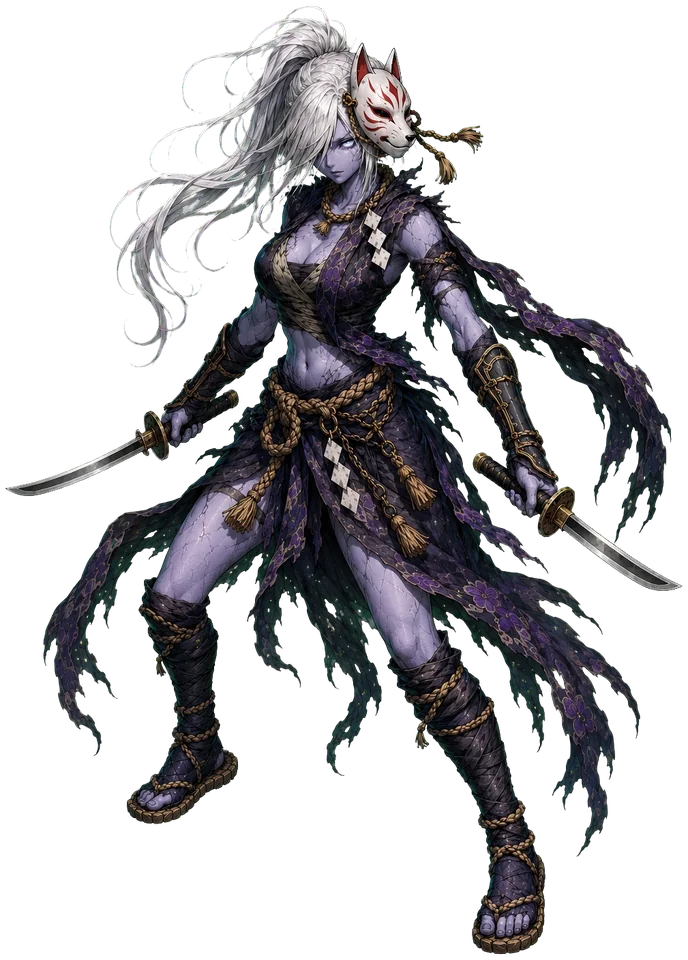
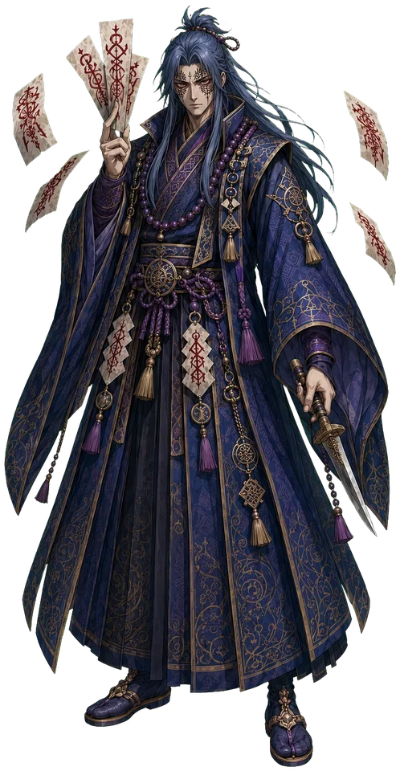
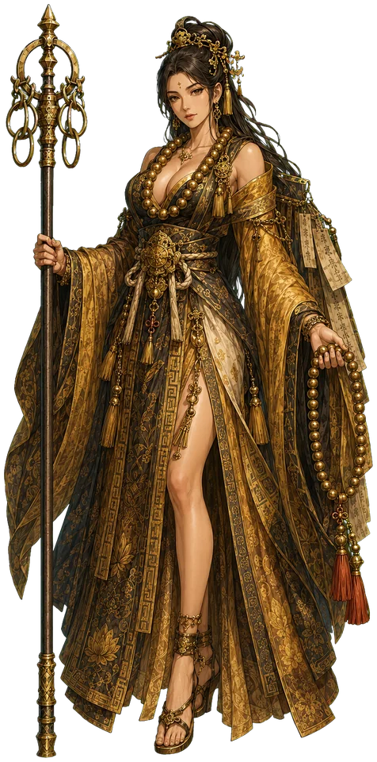

01 / RASETSU
羅刹らせつ
力と肉体を活かす近接戦闘
般若の面の下に怒りを鎮め、大太刀の一振りで敵の正面を打ち砕く冥府の先鋒。 駆け引きは要らない。守るべき列のいちばん前で、誰よりも深く踏み込む——それが羅刹の作法である。
面般若の面
得物大太刀
特性最大HP+40／攻撃+4／防御+2


02 / KAGEHOSHI
影法師かげぼうし
速さ・会心・間合いを活かす遊撃
狐面に薄墨の装束、影のように千切れた裾。気づいたときには懐へ潜り込み、 影断の双刀が急所だけを裂いて戻る。足音は残らない。残るのは、斬られたという結果だけ。
面狐の面
得物影断の双刀
特性最大HP+20／攻撃+2／会心+8%／回避+5%


03 / JUGONSHI
呪禁師じゅごんし
知力・術・状態異常を扱う制圧
顔に刻んだ朱の呪印は、代々の呪禁師が受け継ぐ契約の証。 指の間で呪符が朱く燃えるとき、印は常より速く結ばれ、敵の勢いは縛られる。 短刀は最後の締めに、静かに一度だけ振るわれる。
証朱の呪印
得物呪符と呪禁の法刀
特性最大HP+10／MP+30／攻撃+2／印の再使用が3割速い


04 / GOHOUSOU
護法僧ごほうそう
防御・回復・支援を担う守護
金襴の法衣に大数珠、地に突いた錫杖。金環が鳴れば仲間の傷は癒え、 列は崩れない。第六審査区の門を守り続けてきた、動じぬ山のような守護者である。
装金襴の法衣と大数珠
得物護法の錫杖
特性最大HP+30／MP+20／防御+4／ヒールの癒しが5割深い